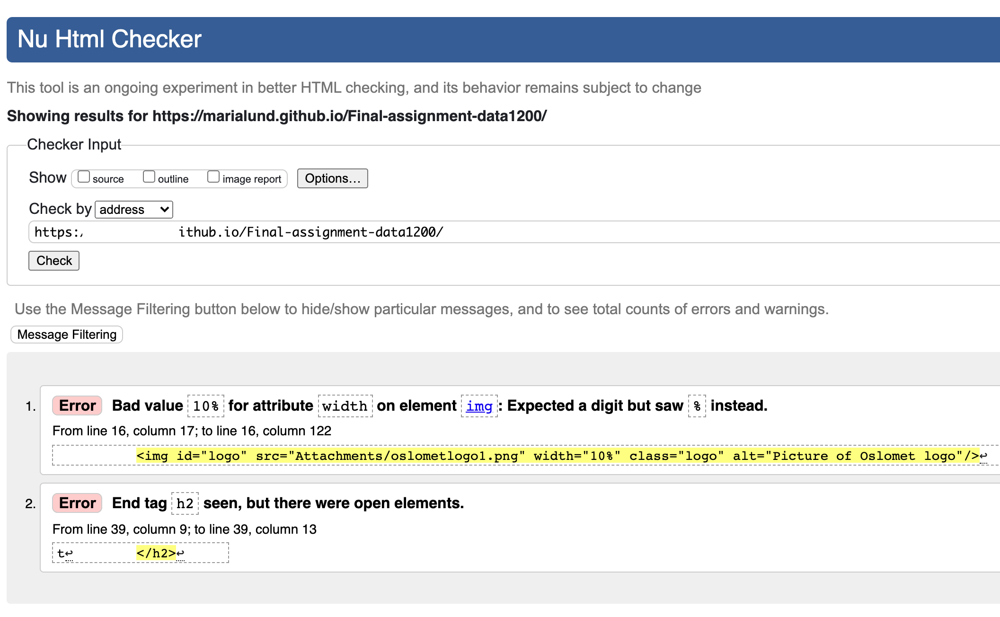

Responsive design
Flex-boxes have been actively used due to the dualistic consideration of easily maintainable code and responsive design. The way we have used flex-boxes facilitates both considerations. As all screen sizes are accommodated for on our website, it becomes accessible for a larger number of people. For instance, most internet traffic in third-world areas is derived from mobile devices, as they are cheaper, mobile, and can be used between power outages.

Universal design
Visual impairment:
Color contrast is a simple yet largely important visual element that ensures readability and ease of the eye.
For our website, we chose simple backgrounds with high-contrasting text color.
Most people with visual impairments have a screen reader for their computer.
Thus, we customized the code in this regard. In the HTML-files, we made sure to use “bold” tags in order for
the screen reader to put emphasis on certain parts of the text. Finally, we provided the pictures with alt-tags
to achieve accessibility in case of blindness, poor internet-speeds, or back-end errors.
Auditory impairment:
We had no videos or other audio elements on the sites. If included, such items would have been captioned
and texted.
Mobility impairment:
By using the scroll-buttons, as well as “tab” and “enter” the user may maneuver through our sites and access links.
The navigation is simple and intuitive, and accessibility is increased due to the large, clickable buttons
Cognitive impairment and Vestibular disorders and seizures:
Cognitive impairments require the webdesign to be simple as to allow focus on specific content.
Content such as sub-headers and important sentences should be emphasized through proper semantic tags in order to
draw attention to them. By making our layout minimalistic and largely consistent, we have managed to create an
online environment void of unnecessary distractions, facilitating use for people with cognitive impairments.
These considerations also benefit people with vestibular disorders and seizures, as the page does not contain
features known to trigger symptoms of such disorders.
Validation
We ensured user-friendliness by controlling our site's accessibility. We used a validator for all our HTML and CSS code. The results were easy to comprehend, as the tests referred to specific lines of code that we could control and fix. However, the validators do not cover all aspects of a site's accessibility. According to the research of IT consultant Karl Grove, only 25% of automated tests can check the full accessibility of a website. To look through the code manually was therefore necessary, not to mention keeping accessibility, user-friendliness, and universal design in mind during the design process.
